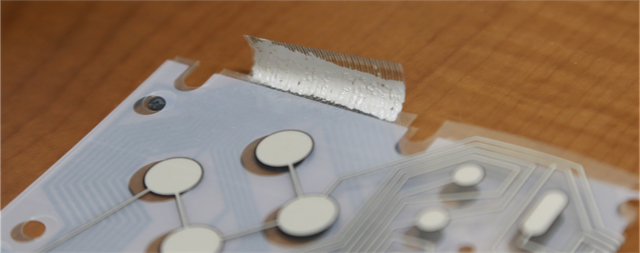
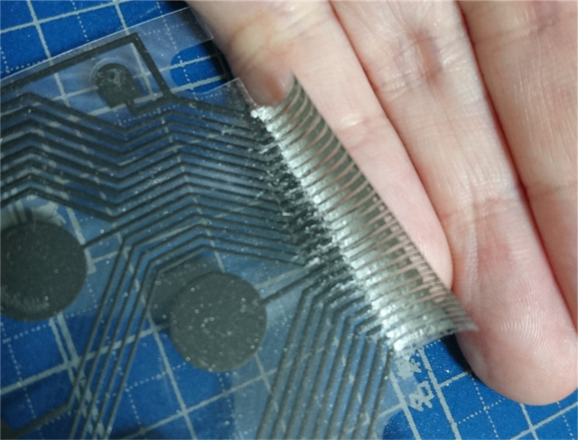
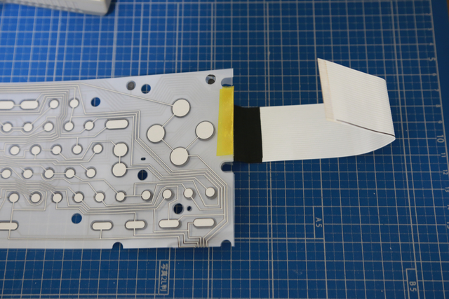

CASIO MX-101 キーボード修復 (2020年9月14日現在)
キーボードシートのケーブル部の透明シートを剥がします。カリカリ擦るのはコネクタ側です。
そして、ほとんど剥がれてしまうので、透明シートを剥がした部分にミッチャクロンマルチを塗布します。
つるつるのフィルムなので、これから塗りつける導電王が少しでも定着するようにする下地材です。
塗布後、しっかり乾燥させる必要があるので、このまま24時間程度自然乾燥させました。
そこにベターッと導電王を塗りつけます。
後で間を削ぐので、隣り合う配線が繋がってしまうことは気にせずにしっかり盛ります。
ただ、後で削ぐときにまとめて剥がれないように、気持ち程度、配線の向きに沿って塗りつけるようにします。

導電王もしっかり乾かす必要があるので、また24時間自然乾燥させました。
25本全部繋がった状態になってるので、この状態でキーボード側の黒い導電体25本と、導電王塗ったところが、全部繋がっていることを
テスターで確認します。
私は、この時点で端っこが断線していたので、その部分だけ追加で導電王を盛って、さらに24時間自然乾燥させました。
無事、25本全部が導電王と繋がっていることが確認できたら、今度は導電王の両端に見えている元の配線に沿って、間を削いでいきます。
金属の定規を当てて、カッターナイフで削ぐ部分を切り取り、取り除く部分を極細マイナス精密ドライバーで削っていきます。

25本に分かれた導電王と、キーボード側の黒い導電体25本を、端から順に導通確認します。
黒い導電体1と導電王1の導通、黒い導電体2と導電王1の不通、黒い導電体2と導電王2の導通、黒い導電体3と導電王2の不通・・・・
と、1つずつシフトさせていくとやりやすいです。
25本が期待通りに分裂されているのが確認できたら、次に FFCケーブルの準備です。
マザーボードに取り付けたコネクタの一カ所未使用部分（ピンを抜き取った端子）に対応する部分に黒い線を引いておきます。
ここが未使用です、の目印ですね。
黒い線を引いた極を使わないように、"FFCケーブルの端子部" と "導電王を塗った部分" とをピッタリ重ねます。
フィルムの方が上に来るように置いて重ねると、フィルムの透明な部分から見えるのでやりやすいです。
ピッタリ重ねた状態で、ポリイミドテープを使って仮固定。
次に、アセテートテープを用意して、ずれないようにしっかりグルグル巻きで固定。

[前へ][次へ]